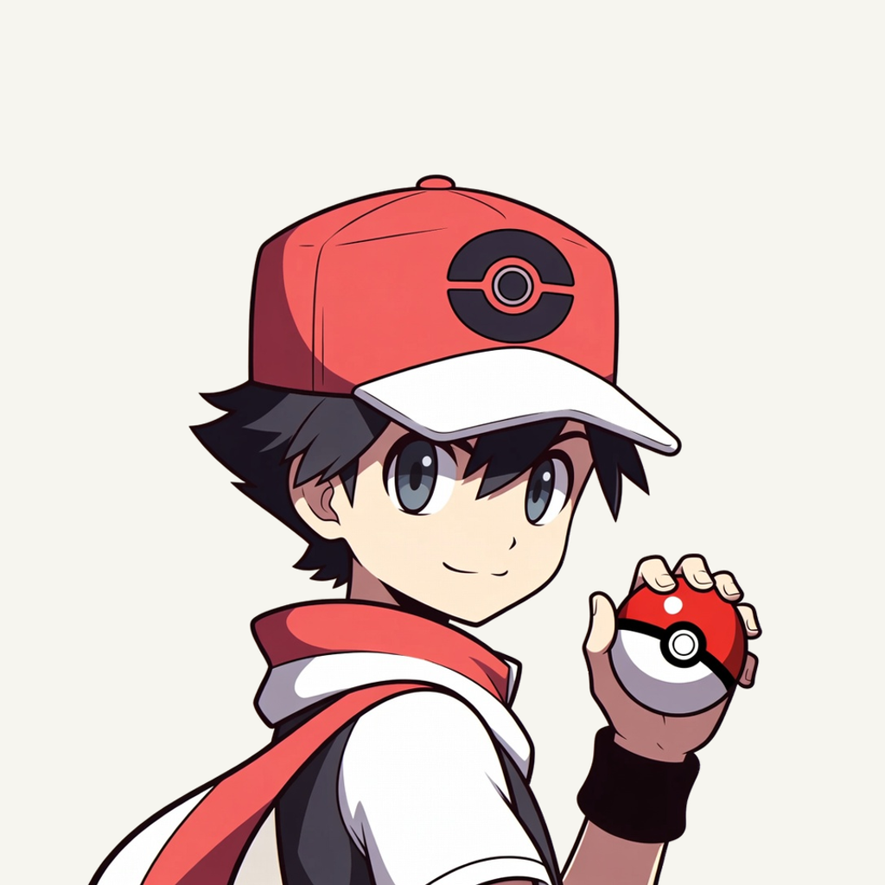
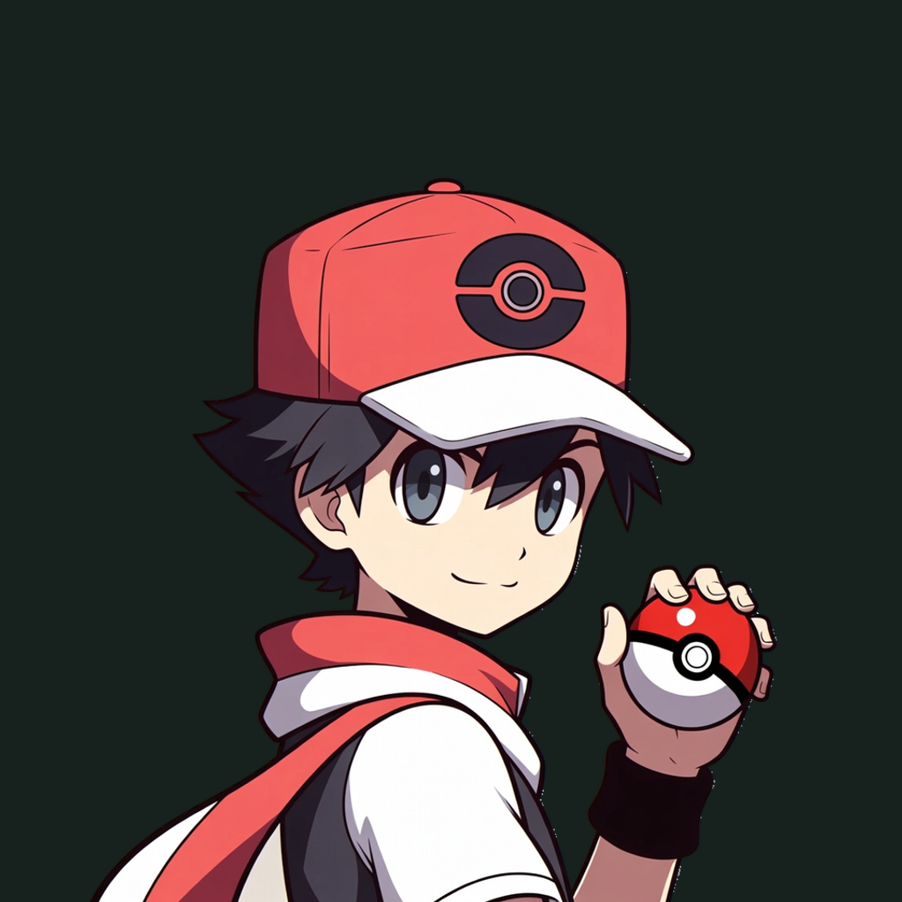

01 / Composition
A backward glance
The supplied trainer turns toward the viewer with a complete raised ball beside the face. One uniform inset protects the cap and fingers while the lower jacket and forearm enter naturally through the frame.
Illustration family · Refined identity
A small pocket. A whole adventure.
Adapted illustration · finishing 01
Native 960 × 960

01 / Composition
The supplied trainer turns toward the viewer with a complete raised ball beside the face. One uniform inset protects the cap and fingers while the lower jacket and forearm enter naturally through the frame.
02 / Drawing
The supplied 960 px illustration retains its red cap, charcoal ink contours, ivory clothing and calm expression. Extraction removes only the beige field; larger exports are explicitly resampled.
03 / Presentation
Offset interrupted ball orbits and short curved seams, impressed into a warm vermilion paper field. The field, grain and contact shadow are independent of transparent app marks.
Presentation tiles at 128/64 px; transparent artwork for small app and browser marks.
At 128/64 px, the red cap, face and raised red-white ball remain clear. At 32/24/16 px, the compact silhouette and dominant colors carry recognition; fine material detail, printed marks and background lines naturally merge. Native source: 960 px; 1024/2048 exports are resampling, not new detail.
A designed background, with colors sampled from the exact native artwork.
Select a swatch to copy its hex value. The Poké Pocket UI primary (#294138) remains a separate product color.
One transparent foreground, checked on two contrasting backgrounds.


Supplied JPEG · native extraction · no generated portrait · native 960 × 960
Loading study text…
Owner-selected character illustration, retained and extracted at its native 960 × 960 resolution. Tactile tonal field and offset portrait framing. Related background relief and controlled contrast.
Two earlier Azure requests returned moderation_blocked with no image; their unchanged prompts and sanitized responses remain in studies 01 and 02. This page presents a documented extraction of the supplied 960 px illustration. 1024/2048 exports are resampling.


{kind=link}
{kind=link}
{kind=link}
{kind=link}
{kind=link}